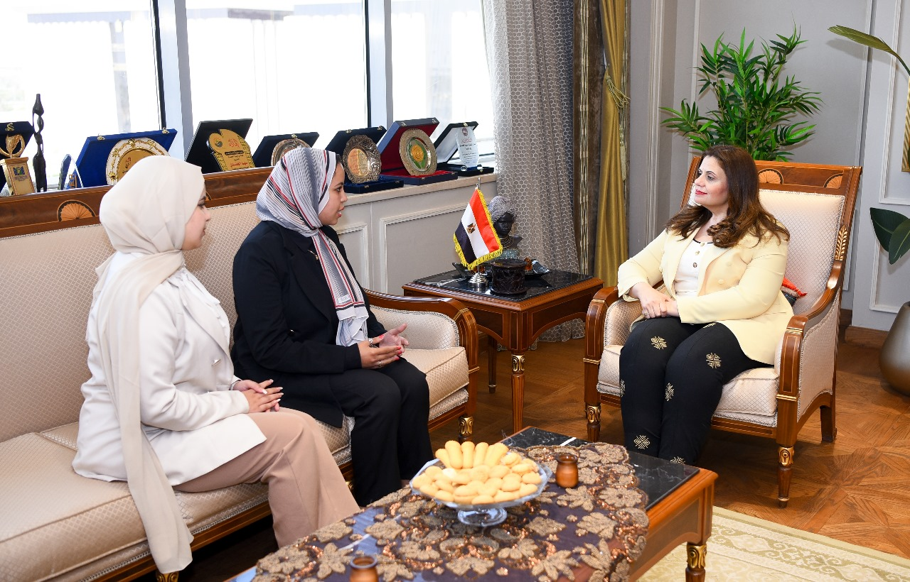
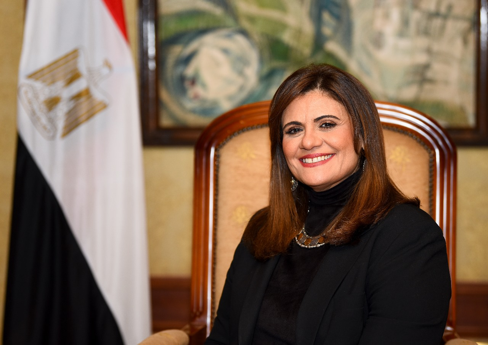
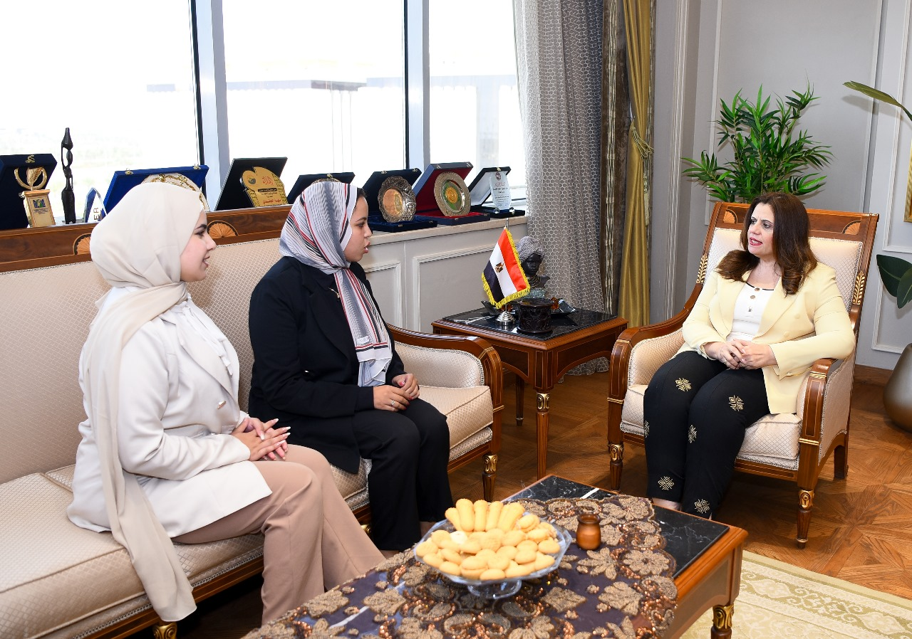
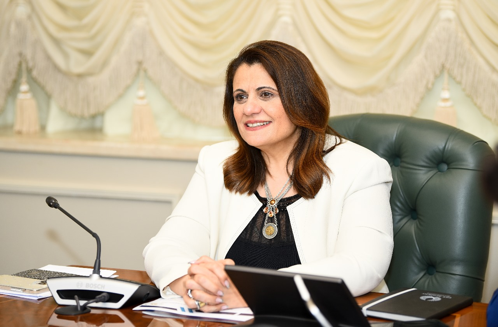
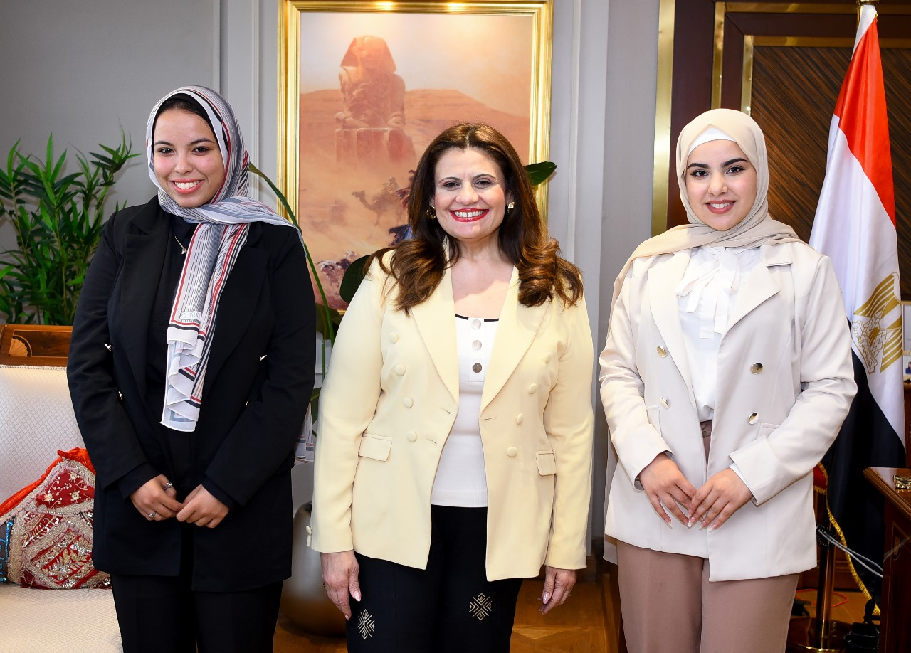

السفيرة سها الجندى وزيرة الدولة للهجرة و شئون المصريين بالخارج في حوار خاص

- فخامة الرئيس عبد الفتاح السيسي رئيس الجمهورية صدر قرار بعودة وزارة الهجرة وشئون المصريين بالخارج في 19 سبتمبر 2015، لتكون الجهة المختصة بإدارة ورعاية شئون المصريين المقيمين خارج الحدود الجغرافية للدولة المصرية، بالتنسيق والتعاون مع الوزارات والهيئات والجهات المختلفة لتلبية احتياجات أكثر من 14 مليون مصري بالخارج في مختلف بلاد العالم. في هذا السياق التقينا سيادة السفيرة سها الجندي، وزيرة الدولة للهجرة وشئون المصريين بالخارج، حيث كشفت لنا العديد من الملفات التي استطاعت الوزارة خلال فترة زمنية قصيرة أن تنجزها وتلبي الكثير من مطالب المصريين بالخارج. ألقت السفيرة سها الجندي الضوء على ملفات عدة، مثل مبادرة استيراد سيارات المصريين بالخارج ومشكلة الهجرة غير الشرعية وإيجاد حلول بديلة للشباب المصري، كذلك دور وزارة الهجرة في تذليل العقبات أمام المستثمرين المصريين بالخارج، أيضاً شرح كاف لكيفية ربط أبناء المصريين بالخارج بوطنهم الأم، وغيرها الكثير من القضايا التي تهم جموع المصريين في سطور الحوار الآتي..
- واحدة من أهم مبادرات وزارة الهجرة هي مبادرة "سيارات المصريين بالخارج ... ما حجم استفادة المصريين بالخارج من هذه المبادرة؟ لقد أنت المبادرة بثمارها بشكل كبير، خاصة وأنها كانت إحدى توصيات مؤتمر المصريين بالخارج الذي ينعقد سنويا لتلقي طلبات ومقترحات أبنائنا في الخارج، حيث وصلت أوامر الدفع الصادرة مليار تسعمائة وستة وسبعين مليون دولار، وصل منها للبنك الأهلي تحويلات تقدر ب 799 مليون دولار و 462 ألفا و 490 دولارا حتى الآن، علما بأن معظم أوامر الدفع هذه مسجلة لأشخاص لم يستقروا على السيارة التي سيرسلونها لمصر، ومن ثم مسجلة بوديعة السيارة صغيرة في حدود 800 دولار على سبيل الحجز وإضافة سيارة أكبر بوديعة أعلى عند الاستقرار عليها.
- ولقد حققنا من خلال هذه المبادرة حلم المصريين بالخارج في استيراد سيارة بهدف الاستخدام الشخصي وقامت الوزارة منذ إطلاق المبادرة بإزالة كافة العقبات التي واجهتهم، كما وصلنا إلى حل يوفر للجاليات المقيمة في الدول التي لا تسمح للمصريين يفتح حسابات وتحويل مرتباتهم مباشرة بالعملة الصعبة إلى مصر، بربط الوديعة من الحساب الذي يتم تحويل المرتب عليه في مصر، بعد الحصول على ورقة موثقة من السفارة بذلك.
- ما هي خطط الوزارة المستقبلية في معالجة الهجرة غير الشرعية؟ نحن تعكف على تنفيد المبادرة الرئاسية مراكب النجاة التي تستهدف ١٤ محافظة و ۷۲ قرية هي الأكثر عرضة للهجرات غير الشرعية لمكافحة هذا الوباء، من خلال تدريب أبناءها من اجل دخواهم في سوق العمل بالتعاون مع مختلف المؤسسات، إرسال العيادات المنتقلة العلاج مواطنيها، وإرسال جولات التوعية لمنع هذا الفكر المدمر الذي يشجع على الهجرة غير الشرعية ويجارف بحياة الأبناء، وتعظيم فكر تنفيد بعض المشروعات الصغيرة التي تسمح لهم بالتمكين الاقتصادي وتمنحهم مستقبل أفضل وانجح إننا حريصون على استمرار جهود وزارة الهجرة في مواجهة الهجرة غير الشرعية وتسعى بكل طاقتنا لخدمة أبنائنا في المحافظات المكافحة الهجرة غير الشرعية، للمشاركة في جهود القيادة السياسية المتمثلة في تحقيق أهداف التنمية المستدامة وبناء الإنسان، بالتعاون مع وزارات ومؤسسات الدولة المصرية، وتؤكد دائما أنه يمكن للهجرة أن تكون ركنا أساسيًا في خطط التنمية المستدامة والازدهار والتقدم في حال تم إدارة الهجرة بشكل جيد، وهو ما نحرص عليه، سواء بإتاحة التدريب والتأهيل لأبنائنا من الشباب ومنحهم المستقبل الذي يحلمون به سواء في مصر أو خارجها، بشكل يحافظ حياتهم ويضمن لهم كرامتهم ويمنحهم مستقبل أفضل.
- بالإضافة إلى على العمل إدماج العائدين، أو التوعية المستمرة المختلف الفئات المعرضة لظاهرة الهجرة غير الشرعية، فقد حرصنا على إتاحة البدائل الآمنة، ضمن جهود المبادرة الرئاسية مراكب النجاة، ومن بينها تأهيل وتدريب الشباب. كما تم التعاون مع جهاز تنمية المشروعات الصغيرة والمتوسطة وطرحوا استراتيجيات تمويل المشروعات، وكذلك استعراض نماذج ناجحة من مشروعات الشباب التحفيز غيرهم على العمل والسعي داخل الوطن، والا يجازفوا بأرواحهم في رحلات الموت.
- إننا نسعى لمحاصرة ظاهرة الهجرة غير الشرعية، لنتيح بدائل مستقبلية آمنة للشباب، بجانب دراسة مسببات الظاهرة، بالتعاون مع المراكز البحثية المتخصصة، بجانب تقديم مقترح قانون لمجابهة ظاهرة الهجرة غير الشرعية والتنسيق مع الأزهر الشريف والكنيسة المصرية للتوعية بمخاطر الظاهرة في المجتمعات المصدرة للهجرة غير الشرعية، وكذلك التعاون مع وزارة التربية والتعليم للتوعية بمخاطر الظاهرة، ضمن المناهج الدراسية المختلفة، وكذلك الحرص على توعية شباب الجامعات المصرية بأهمية الاستثمار في وقتهم وتعلم مهارات المستقبل، ومعرفة الوظائف الأكثر طلبا في الوقت الحالي، ومن بينها البرمجة وعلوم لغة الآلة وتحليل البيانات وغيرها، وهو ما يوفر عوائد متميزة لهم، وكذلك ضمان فرص أكبر في هذا السوق الذي يتعاظم الطلب عليه باستمرار.
- وحرصنا كذلك على التعاون مع الشركاء الدوليين لتدريب وتأهيل الشباب، فجاء المركز المصري الألماني للوظائف والهجرة وإعادة الإدماج التابع للوزارة مكملا للمبادرة، حيث يقوم على تقديم النصح والإرشاد للمصريين بشأن العمل في مصر وتوفير الفرص للعائدين من الخارج من خلال إعادة إدماجهم اقتصاديا واجتماعيا، كما يقدم المركز الخدمات للشباب المصري لتحسين قدراتهم وتطوير مهاراتهم بهدف إيجاد فرص العمل، حيث تم إطلاقه تنفيذا للتوجيهات الرئاسية لوزارة الهجرة، لدراسة أسواق الاتحاد الأوروبي وتعزيز فرص الهجرة الآمنة لهذه الأسواق، كون وزارة الهجرة هي الشريك الوطني المعني بإدارة والإشراف على المركز والمراكز المماثلة مع الدول الراغبة والشركاء الدوليين للتعاون بإنشاء مراكز مماثلة مستقبلا، ومن بينها إيطاليا، هولندا، الاتحاد الأوروبي والسعودية، وغيرهم، ونسعى الآن إلى إطلاق المركز المصري الوطني للهجرة برعاية دولة رئيس الوزراء، وذلك ليضم كافة الجهات المعنية بالتدريب، من أجل التوظيف والعمل على خلق الفرص البديلة لشبابنا الإثنائهم عن فكرة السفر بطريقة غير شرعية، وتحقيق تنمية مجتمعية من خلال توفير فرص تدريب وتأهيل وتشغيل للشباب بالداخل والخارج بعقود رسمية للعمل . هناك وكذا خاصة من القرى الأكثر فقرا والأكثر احتياحًا، وذلك ضمن المبادرتين الرئاسيتين: مراكب النجاة وحياة كريمة هذا المركز مقترح بالفعل وجاري عقد الاجتماعات الخاصة بتأسيسه تحت رعاية دولة رئيس الوزراء بحيث يكون على نسق المركز المصري الألماني الذي يدرب الشباب وفقا لاحتياجات السوق الألماني ويرسلهم. للعمل بالاستثمارات المصرية والأجنبية في مصر
- أبناء الجيل الثاني والثالث من المصريين بالخارج هم خط الدفاع الأول عن مصر في الخارج، وخير سفراء للوطن، وتعمل وزارة الهجرة على ربطهم بوطنهم الأم عن طريق تنفيذ الدورات التثقيفية والمعسكرات الشبابية، كذلك تنظيم زيارات للمناطق التراثية والسياحية والدينية أيضا أهمية إطلاعهم على الإنجازات وجهود التنمية التي تحدث في الدولة ليكونوا على دراية بالمستجدات والحقائق، كذلك يكون هناك تواصل مستمر عبر وسائل التواصل الاجتماعي للاستماع للتحديات والتأثيرات السلبية التي تستهدف عقول الشباب، وصد أي محاولات استقطاب للأفكار المتطرفة وتقديم الدعم المطلوب لهم.
- مصر تواجه الكثير من التحديات مثل حرب طمس الهوية واندماج أبنائنا في الخارج في المجتمعات الأجنبية التي يعيشون فيها، وكذلك النشء بالداخل في المدارس الدولية، حيث يريدون من يتحدث إليهم - لكي ينمي لديهم القيم والعادات والتقاليد والانتماء إلى الوطن، وهو ما نقوم به ضمن المبادرة الرئاسية اتكلم عربي، والتي استضافت عددا من العلماء والباحثين في مجال المصريات، وتاريخ مصر القديمة لتقديم محاضرات لتعريف الشباب بعظمة الحضارة المصرية.
- وتم عقد ندوات تعريفية بمشاركة د. وسيم السيسي، وكذلك د. ميسرة عبد الله، وتم التنسيق لعمل فيديوهات عما قدمته الحضارة المصرية في مختلف المجالات ومن بينها الطب والعمارة والفلك وغيرهم، لتعريف أبنائنا بالخارج بتاريخنا الذي أبهر العالم وما زال لينقل لهم جزءا هاما من تراثنا المصري ونهضتنا المصرية التي علمت العالم في مجالات الطب والفلك والتصنيع وغيرها، كذلك الكتيبات والمادة التعليمية المبسطة عن الحضارة المصرية القديمة ليسهل على الأطفال قراءتها واستيعابها .
- حريصون أيضا على ربط المصريين بالخارج بثقافتهم، بالتنسيق مع الوزارات المعنية، حيث سبق وتم تنظيم مسابقات في الغناء والموسيقى والشعر والقصة القصيرة بالتعاون مع وزارة الثقافة، ونحرص على تعريفهم بمختلف المناسبات الوطنية والأعياد الوطنية، ليبقوا دائما على ارتباط بالوطن.
- وفيما يتعلق بشبابنا الدارسين في الخارج، فقد أطلقنا مركز وزارة الهجرة لشباب المصريين بالخارج ميدسي والذي أصبح له سفراء من شباب الدراسين في كل أنحاء العالم، وكذلك أصبح منصة شاملة جامعة. لكل شبابنا بالخارج، ومن خلاله نحن حريصون على إتاحة الفرص التدريبية للطلاب الدارسين بالخارج، في العديد من وزارات ومؤسسات الدولة، وهناك فرص تدريبية تمت في وزارة التخطيط والهيئة العامة للاستثمار وغيرهم، وهناك الكثير من المجالات المتخصصة التي يحرص أبناؤنا على دراستها، ولذلك نحرص على مناقشتهم والاستماع المقترحاتهم وأفكارهم لربطهم بالمسئولين والاستفادة منها .
- وزارة الهجرة حريصة على متابعة أبنائنا بالخارج والاطمئنان على سلامتهم، وبشكل خاص في أوقات النزاعات، ومن بينها أزمة الحرب الروسية الأوكرانية، والحرب السودانية، وزلزال المغرب وتركيا وسوريا. وإعصار ليبيا وغيرهم فمنذ بدء الأزمة الحرب الروسية الأوكرانية، تم التعامل مع الأزمة من خلال عدة مراحل بدأت المرحلة الأولي عند إنشاء الجسر الجوي وإعادة الطلاب المصريين من أوكرانيا، إلى أن تمت موافقة فخامة السيد رئيس الجمهورية على توصيات لجنة الأزمات والتي تضمنت النظر في التماسات الطلاب المصريين في روسيا وأوكرانيا، وإعادة دراسة الملف من خلال تشكيل لجنة وطنية دائمة لإدارة هذا الملف تحت إشراف وزارة الدولة للهجرة وشئون المصريين بالخارج وبالتنسيق مع وزارتي الخارجية والتعليم العالي وأجهزة الدولة المعنية، بجانب وضع قواعد وضوابط تحويل الطلاب من خارج جمهورية مصر العربية إلى الجامعات المصرية، بالنسبة للطلاب العائدين من روسيا وأوكرانيا مند اللحظة الأولى لاندلاع الصراع المسلح في السودان قامت وزارة الهجرة بالإسراع بتفعيل غرفة عمليات الوزارة للتعامل مع الوضع، ومتابعة أوضاع المصريين على الأرض، حيث كان هناك تواصل مستدام منذ اللحظة الأولى وخلال فترة الاجازات الخاصة بالأعياد مع الطلاب ورموز الجاليات بصورة مباشرة وفقا لقاعدة البيانات المسجلة لدى الوزارة لمحاولة حماية الطلاب تحت القصف والتعامل الفوري لحصر أعداد المصريين في السودان وخصوصا من الطلبة والعائلات لتحديد أماكن تواجدهم استعدادا للإجلاء ومحاولة ودعم توفير احتياجاتهم الأساسية للحياة خلال ظروف الحرب، حيث قام مركز ميدسي الشباب الدارسين في الخارج بدور هام من خلال ابنائنا الدارسين التابعين له وسفراء المركز فيه والعائلات من جانب ومن الجانب الآخر من خلال التواصل المستدام مع سفارتنا بالخرطوم والقنصلية المصرية بوادي حلقا
- قد لعبت الوزارة دور حلقة الوصل المستدامة، ما بين المواطنين علي الأرض وخلية الأزمة الوطنية و التي تم تشكيلها على مستوي الدولة ومؤسساتها (دفاع خارجية داخلية الأجهزة الأمنية، صحة تضامن نقل هلال احمر وغيرها حيث قامت كل وزارة ومؤسسة من مؤسسات الدولة بدورها في إعادة أبناء الجالية المصرية في السودان بالسلامة. في تناغم متميز تميز فيما بينها، رغم الظروف القاسية للحرب، حيث تم إنقاذ أكثر من 10 آلاف مصري معظمهم من الدارسين والدارسات في السودان - حيث تعد الحالية المصرية في السودان هي الأكبر عددا .
- كما تم مساعدة العديد من الأجانب علي الإجلاء فور علمها باندلاع الزلزال في كل من تركيا وسوريا حرصت وزارة الهجرة على جمع كافة المعلومات عن جاليتيها في البلدين من خلال قاعدة البيانات الخاصة بوزارة الهجرة وقاعدة بيانات مركز ميدسي الشباب الدارسين حيث تواصلت مع سفراء المركز من الدارسين لاستطلاع الوضع على الأرض، كما تواصلت مع وزارة الخارجية وسفارتينا في البلدين لاستيضاح الخسائر، وهل طالت أحد من المصريين من عدمه وقد كان الدارسون من سفراء مركز ميدسي الأكثر قدرة على التواصل. مع زملائهم والاستجابة للاستغاثات حيث عانى الكثير من الأبناء في نطاق الزلزال من فقد منازلهم وبعضهم توارى تحت الأنقاض لبعض
- تابعت الوزارة الأمور حتى استقر لدى ضميرها بأن الجميع بخير، عدا إحدى العائلات المصرية التي فقدت حياتها تحت الأنقاص، في حين تم مساعدة الجميع على إيجاد الملاذ الآمن بعيدا عن نطاق الزلزال في تركيا، والتي بها حوالي 5 آلاف من الطلبة المصريين الدارسين هناك . وبعض المصريين من التجار والمقيمين هناك، في حين كان الأمر أسهل واقل خطورة في سوريا حيث استقر لدى قناعتها بأن المصريين هناك في أمان وبعيدين عن نطاق الزلزال كما أن أعدادهم ليست بالكبيرة التي تثير المخاوف تابعت وزارة الهجرة تطورات الموقف الخاص بالزلزال الذي ضرب المغرب حيث سارعت بعقد غرفة العمليات على مدار الساعة بعد أن تواصلت مع أقطاب الجاليات وسفارتنا في المغرب وعمل قاعدة البيانات والتعرف على الوضع على الأرض للاطمئنان على أحوال الجالية المصرية هناك، ولم تسجل الحالة المغربية أي بلاغات عن ضحايا أو مصابين مصريين، وأحوال الجالية كانت حيدة ومستقرة.
- بؤرة ورغم أن الوضع كان مطمئنا تماما في المغرب بالنسبة لأهالينا إلا أن العكس تماما قد حدث في ليبيا حيث ضرب إعصار دانيال من بؤر تواجد المصريين في ليبيا، كما أن جزء من الجالية كان من بين المهاجرين بشكل غير شرعي من عدد من الجنسيات من بينهم مصريين، ما أدى إلى عقد وزارة الهجرة غرفة عمليات بالتنسيق مع وزارة الخارجية بجانب فتح خط اتصال مباشر مع مجلس الوزراء، حيث تلاقت جميع هذه المسارات لتشكيل وحدة تحرك مشتركة للاستجابة لآية بلاغات أو استغاثات أو استفسارات من أهالي المصريين الذين كانوا موجودين في ليبيا وقت العاصفة دانيال وما أحدثته من فيضانات لضمان التنسيق على أعلى المستويات بين المؤسسات الحكومية في التعامل مع الأزمة
- وتكاد تكون مصر هي الدولة الوحيدة التي استطاعت فواتها المسلحة التوجه بشكل فوري مع بداية اندلاع الإعصار في ليبيا محاولة لإنقاذ أي من الناجين من هذه الكارثة الإنسانية، غير أن سوء الأوضاع ووقوع بؤرة الإعصار بين حبلين قد كانت بمثابة المصيدة للموجودين في المنطقة حيث أعادت الطائرات المصرية العسكرية 87 جثمانا المواطنين مصريين توفاهم الله في ليبيا نتيجة لإعصار دانيال بعد أن انتشلت حثثهم من البحر بالتعاون مع السلطات الليبية التي تعرفت على جوازاتهم، حيث توجهت الطائرات العسكرية بالجثامين إلى مسقط رأس أبناء مصر الذين توفاهم الله في ليبيا . في السياق ذاته، نسقت وزارة الهجرة مع وزارة الصحة لاستقبال عدد من الحالات الإنسانية من المصابين من المصريين بالخارج، ومن بينهم من تم اجراء عمليات جراحية له سواء للعائدين من السودان أو آخرين مثل الشاب المصري أحمد العائد من موزمبيق وكان بحالة صحية حرجة او غيرها من الحالات.
- المبادرة قام بإطلاقها الرئيس عبد الفتاح السيسي في القمة الثلاثية بنيقوسيا في نوفمبر 2017، وتم تنفيذ النسخة الأولى للمبادرة في أبريل 2018 بحضور رؤساء الثلاث دول مصر واليونان وقبرص، بمحافظة الإسكندرية، وتنظيم العديد من الزيارات للأماكن السياحية والدينية لوفد يوناني وقبرصي ضم نحو 250 فردا من الجاليتين كانوا يعيشون في مصر بالماضي وتعد مصر أول دولة تخصص مبادرة رئاسية للاحتفاء بالجاليات الاجنبية التي عاشت على ارضها ويجري الآن التحضير لفعاليات النسخة القادمة من المبادرة بالتعاون مع الجانبين اليوناني والقبرصي، وجاري التعاون مع اليونسكو لتسجيل فيلم وثائقي عن هذه الجاليات.
- تم الاتفاق على ضرورة العمل على تطوير أوجه التعاون تحت مظلة المبادرة من خلال إطلاق المريد من المبادرات الفرعية الخاصة بالشباب والسياحة، ووجود العديد من الموضوعات التي يتعين تطوير التعاون المشترك في إطارها والتي ينقص الدول الثلاث التركيز على التعاون فيها مثل الاستثمار، تعظيم وتكامل الموارد بين الدول الثلاث والسياحة البحرية وسياحة اليخوت والموانئ وسياحة الطعام والسياحة الدينية والسياحة العلاجية والتي من شأنها الترويج للدول الثلاث كمقاصد سياحية في الإطار الإقليمي المشترك الترتيب والتنسيق بشأن المواقف السياسية، وتعظيم الترويج المشترك وتطوير فرص التكامل وخصوصا مع وجود فكر مشترك يجمعها باعتبارها دول متوسطية.
- المصريون بالخارج بشكل عام هم سفراء لبلدهم مصر، وخير ممثلي لها، أشكركم دائماً من أعماق قلبي لوطنيتكم ومحبتكم وعطائكم المستمر ونقل الصور الصحيحة عن مصر، وأوكد أن مصر دائماً في صفكم وتعمل علي تلبية كافة احتياجاتكم الهامة رسالتي للشباب الدارسين بالخارج، أنتم خط الدفاع الأول عن وتذليل العقبات.
- مصر، واطالبكم بالتفوق في دراستكم وحياتكم العملية، بلدكم مصر في انتظاركم وبحاجة لكم، لتنقلوا خبراتكم المختلفة، إحساسي بالسعادة لا يوصف، وتقديري لكم ليس له حدود عند سماع أخبار نجاح المصريين بالخارج في كافة المجالات.
التعليقات
بالتوفيق انشاء الله
اكتب تعليق